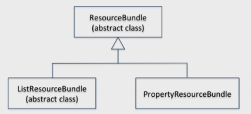

JAVA SE 8
Localização
Computadores e software se tornaram tão comuns hoje em dia que são usados em todo o mundo para atividades humanas. Para que qualquer software seja relevante e útil para esses usuários, ele precisa ser localizado. O processo no qual adaptamos o software à língua e costumes locais é conhecido como localização.
A localização é toda sobre como tornar o software relevante e utilizável para os usuários de diferentes culturas - em outras palavras, personalizar software para pessoas de diferentes países ou idiomas. Como você localiza um aplicativo de software? Duas orientações importantes devem ser consideradas quando você localizar um aplicativo de software:
- 1- Não codifique o texto (como mensagens para os usuários, elementos textuais em GUIs, etc.) e separe-os em arquivos externos ou classes dedicadas. Com isso, normalmente há um esforço mínimo para adicionar suporte para um novo local em seu software.
- 2- Lidar com aspectos específicos da cultura, como data, hora, moeda e números de formatação, com a localização em mente. Em vez de assumir uma localidade padrão, crie de tal maneira que a localidade atual seja buscada e personalizada.
Você aprenderá agora como localizar seu software. A localização envolve principalmente a criação de pacotes de recursos para diferentes localidades, além de tornar o software sensível à cultura, adaptando-o para uso em diferentes localidades. Você também aprenderá a criar e usar esses pacotes de recursos.
Localidades
Uma localidade é “um lugar que representa um país, idioma ou cultura”. Considere a localidade Canadá-França. O francês é falado em muitas partes do Canadá, e isso pode ser um local. Em outras palavras, se você deseja vender software personalizado para os canadenses que falam francês, então você precisa facilitar o seu software para essa localidade. Em Java, essa localidade é representada pelo código fr_CA, em que fr é a abreviação de French e CA é a abreviação de Canada; discutiremos o esquema de nomenclatura para localidades em mais detalhes posteriormente nesta seção.
A classe Locale
Em Java, a classe java.util.Locale fornece suporte de programação para códigos do idioma. A seguir os métodos importantes nesta classe.
| Métodos | Descrição |
|---|---|
| static Locale[] getAvailableLocales() | Retorna uma lista de localidades disponíveis (isto é, localidades instaladas) suportadas pela JVM |
| static Locale getDefault() | Retorna o código do idioma padrão da JVM. |
| static void setDefault(Locale newLocale) | Define o código do idioma padrão da JVM. |
| String getCountry() | Retorna o código do país para o objeto de localidade. |
| String getDisplayCountry() | Retorna o nome do país para o objeto de localidade. |
| String getLanguage() | Retorna o código do idioma para o objeto de localidade. |
| String getDisplayLanguage() | Retorna o nome do idioma para o objeto de localidade. |
| String getVariant() | Retorna o código da variante para o objeto de localidade. |
| String getDisplayVariant() | Retorna o nome do código da variante para o objeto de localidade. |
| String toString() | Retorna uma string composta dos códigos para o idioma, país, variante da localidade etc. |
//AvailableLocales.java
import java.util.Locale;
import java.util.Arrays ;
class AvailableLocales {
public static void main(String []args) {
System.out.println("The default locale is: " + Locale.getDefault());
Locale [] locales = Locale.getAvailableLocales();
System.out.printf("No. of other available locales is: %d, and they are: %n",
locales.length);
Arrays.stream(locales).forEach(locale -> System.out.printf("Locale code: %s and it stands for %s %n",
locale, locale.getDisplayName()));
}
}
Este código imprime o seguinte:
The default locale is: en_US No. of other available locales is: 160, and they are: Locale code: ms_MY and it stands for Malay (Malaysia) Locale code: ar_QA and it stands for Arabic (Qatar) Locale code: is_IS and it stands for Icelandic (Iceland) Locale code: sr_RS_#Latn and it stands for Serbian (Latin,Serbia) Locale code: no_NO_NY and it stands for Norwegian (Norway,Nynorsk) Locale code: th_TH_TH_#u-nu-thai and it stands for Thai (Thailand,TH) Locale code: fr_FR and it stands for French (France) Locale code: tr and it stands for Turkish Locale code: es_CO and it stands for Spanish (Colombia) Locale code: en_PH and it stands for English (Philippines) Locale code: et_EE and it stands for Estonian (Estonia) Locale code: el_CY and it stands for Greek (Cyprus) Locale code: hu and it stands for Hungarian [...rest of the output elided...]
Vamos analisar os métodos no programa antes de analisar a saída. Você usa o método getDefault() em Locale para obter o código da localidade padrão. Depois disso, use getAvailableLocales() na classe Locale para obter a lista de localidades suportados pela JVM. Agora, para cada localidade, você imprime o código da localidade e também imprime o nome descritivo usando o método getDisplayName() do Locale.
O programa imprime a localidade padrão como en_US para esta JVM, o que significa que o padrão é o idioma inglês falado nos EUA. Em seguida, imprime uma lista muito longa de localidades disponíveis; para economizar espaço, mostramos apenas pequena parte da saída. A partir deste programa, você sabe que há muitos locais disponíveis e suportados, e há um código de idioma padrão associado a cada JVM.
Existem quatro tipos diferentes de códigos de idioma nesta saída:
- 1- “hu e significa húngaro”: apenas um código onde hu significa húngaro
- 2- “ms_MY e significa Malay(Malásia)”: dois códigos separados por sublinhado em que ms significa Malaio e MY significa Malásia
- 3- “no_NO_NY e significa norueguês(Noruega, Nynorsk)”: três códigos separados por sublinhados, como em no_NO_NY, onde no significa para norueguês, NO para a Noruega e NY para Nynorsk
- 4- “th_TH_TH_ # u-nu-thai e significa Thai (Tailândia, TH)”: dois ou três códigos iniciais separados por sublinhados e o final por #or _ #, como em th_THTH_ # u-nu-thai, que vamos discutir agora.
Veja como esses nomes de localidade são codificados:
language + "_" + country + "_" + (variant + "_#" | "#") + script + "-" + extensions
Esse esquema de codificação de localidade permite combinar diferentes variações para criar uma localidade. Para o código de idioma "th_THTHTH # u-nu-thai",
- O código de idioma é "th" (tailandês) e é sempre escrito em letras minúsculas
- O código do país é "TH" (Tailândia) e é sempre escrito em maiúsculas
- O nome da variante é "TH"; aqui ele repete o código do país, mas pode ser qualquer string
- O nome do script é uma string vazia aqui; se fornecido, será uma string de quatro letras com a primeira letra em maiúscula e o restante em minúsculas (por exemplo, Latn)
- A extensão segue o caractere # ou _ # (já que o script é uma string vazia); é "u-nu-thai" neste exemplo
Para dar outro exemplo, considere o código de local "sr_RS_ # Latn",
- O código do idioma é "sr" (sérvio)
- O código do país é "RS" (Sérvia)
- O nome da variante está vazio aqui
- O nome do script é "Latn" (latim), que é uma string de quatro letras com a primeira letra em maiúscula e o restante em minúsculas
- A extensão está vazia aqui
Considere o inglês, que é falado em muitos países. Existem variações em inglês com base no país em que o idioma é falado. Todos sabemos que o inglês americano é diferente do inglês britânico, mas existem muitas versões desse tipo. Aqui está o código que filtra apenas locales em inglês de todas as localidades disponíveis:
//AvailableLocalesEnglish.java
import java.util.Locale;
import java.util.Arrays;
class AvailableLocalesEnglish {
public static void main(String []args) {
Arrays.stream(Locale.getAvailableLocales())
.filter(locale -> locale.getLanguage().equals("en"))
.forEach(locale ->
System.out.printf("Locale code: %s and it stands for %s %n",
locale, locale.getDisplayName()));
}
}
Imprime o seguinte (a saída e a ordem podem mudar na sua máquina):
Locale code: en_MT and it stands for English (Malta) Locale code: en_GB and it stands for English (United Kingdom) Locale code: en_CA and it stands for English (Canada) Locale code: en_US and it stands for English (United States) Locale code: en_ZA and it stands for English (South Africa) Locale code: en and it stands for English Locale code: en_SG and it stands for English (Singapore) Locale code: en_IE and it stands for English (Ireland) Locale code: en_IN and it stands for English (India) Locale code: en_AU and it stands for English (Australia) Locale code: en_NZ and it stands for English (New Zealand) Locale code: en_PH and it stands for English (Philippines)
A saída refere-se a diferentes localidades em inglês e utiliza apenas o código de idioma e o código do país. Usamos o método getLanguage() em Locale, que retorna o código de localidade. Quais são outros desses métodos? Vamos explorar os métodos disponíveis na classe Locale agora.
Obtendo Detalhes do Local e definindo Locais
Os métodos getter na classe Locale, como os códigos de retorno getLanguage(), getCountry() e getVariant(), enquanto os métodos semelhantes getDisplayCountry(), getDisplayLanguage() e getDisplayVariant() retornam os nomes. O próximo exemplo ilustra como usar esses métodos para a localidade Locale.CANADA_FRENCH;
//LocaleDetails.java
import java.util.Locale;
public class LocaleDetails {
public static void main(String args[]) {
Locale.setDefault(Locale.CANADA_FRENCH);
Locale defaultLocale = Locale.getDefault();
System.out.printf("The default locale is %s %n", defaultLocale);
System.out.printf("The default language code is %s and the name is %s %n",
defaultLocale.getLanguage(), defaultLocale.getDisplayLanguage());
System.out.printf("The default country code is %s and the name is %s %n",
defaultLocale.getCountry(), defaultLocale.getDisplayCountry());
System.out.printf("The default variant code is %s and the name is %s %n",
defaultLocale.getVariant(), defaultLocale.getDisplayVariant());
}
}
Este imprime o seguinte:
The default locale is fr_CA The default language code is fr and the name is français The default country code is CA and the name is Canada The default variant code is and the name is
Vamos entender o programa. O método setDefault() usa um objeto Locale como argumento. Neste programa, você define a localidade padrão como Locale.CANADA_FRENCH com esta declaração:
Locale.setDefault(Locale.CANADA_FRENCH);
A classe Locale tem muitos objetos Locale estáticos representando locais comuns para que você não precise instanciá-los e usá-los diretamente em seus programas. Nesse caso, Locale.CANADA_FRENCH é um objeto Locale estático.
Em vez de usar este objeto Locale estático, você pode optar por instanciar um objeto Locale. Aqui está uma maneira alternativa de definir a localidade padrão criando um novo objeto de localidade do Canadá (francês):
Locale.setDefault(new Locale("fr", "CA", ""));
O método getDefault() em Locale retorna o conjunto de objetos de código do idioma padrão na JVM. A próxima declaração usa métodos para obter informações relacionadas ao país. A diferença entre os métodos getCountry() e getDisplayCountry() é que o primeiro método retorna o código do país (que não é muito legível para nós), e o segundo retorna o nome do país, que é legível por humanos. O código do país é um código de duas ou três letras (esse código vem de um padrão internacional: ISO 3166).
O comportamento de getLanguage() e getDisplayLanguage() é semelhante a obter detalhes do país. O código de idioma consiste em duas ou três letras (este código vem de outro padrão internacional: ISO 639).
Não havia variante nessa localidade, então nada foi impresso quando você usou os métodos getVariant() e getDisplayVariant(). No entanto, para alguma outra localidade, poderia haver valores variantes e esses valores seriam impressos para essa localidade. A variante pode ser qualquer detalhe extra, como ambientes operacionais (como MAC para máquina Macintosh) ou o nome da empresa (como Sun ou Oracle). Além disso, você também tem métodos menos usados, como getScript() e getDisplayCountry() que retorna o código de script e o nome do país para a localidade.
em vez de chamar o método getDisplayCountry() da Locale, que não recebe argumentos, você pode escolher a versão sobrecarregada de getDisplayCountry(Locale), que usa um objeto Locale como um argumento. isso irá imprimir o nome do país como no local passado. Por exemplo, para a chamada Locale.GERMANY.getDisplayCountry(), você verá a saída "Deutschland" (é assim que os alemães se referem ao país deles); no entanto, para a chamada Locale.GERMANY.getDisplayCountry(Locale.ENGLISH), você obterá a saída "Germany" (é assim que os britânicos se referem ao nome do país Alemanha).
Diferentes Maneiras para Criar Obejtos Locale
Há muitas maneiras de obter ou criar um objeto Locale. Listamos quatro opções aqui para criar uma instância de localidade italiana que corresponda ao código de idioma dela.
Opção 1: use o construtor da classe Locale: Locale (String language, String country, String variant):
Locale locale1 = new Locale ("it", "", "");
Opção 2: Use o método forLanguageTag(String languageTag) na classe Locale:
Locale locale2 = Locale.forLanguageTag("it");
Opção 3: Crie um objeto Locale instanciando Locale.Builder e, em seguida, chame setLanguageTag() desse objeto:
Locale locale3=new Locale.Builder().SetLanguageTag("it").Build();
Opção 4: use as constantes finais estáticas predefinidas para localidades na classe Locale:
Locale locale4 = Locale.ITALIAN;
Você pode escolher o caminho para criar um objeto Locale com base em sua necessidade. Por exemplo, a classe Locale tem apenas algumas constantes predefinidas para localidades. Se você quiser um objeto Locale de um dos predefinidos, poderá usá-lo imediatamente ou terá que verificar qual outra opção usar.
Pacotes(Bundles) de Recursos
Na última seção, discutimos a classe Locale e a maneira de obter detalhes da localidade padrão e da lista de localidades disponíveis. Como você usa essas informações de localidade para personalizar o comportamento de seus programas?
Vamos dar um exemplo simples de cumprimentar alguém: em inglês, você diz "Hello", mas se a localidade for diferente, como você altera essa saudação para, por exemplo, "Ciao" se a localidade for italiana (Itália)?
Uma solução óbvia é obter a localidade padrão, verificar se a localidade é a Itália e imprimir “Ciao”. Isso funcionará, mas essa abordagem não é nem flexível nem extensível. Como sobre a personalização para outras localidades como a Arábia Saudita (árabe) ou Tailândia (tailandês)? Você precisa encontrar e substituir todas as strings específicas de localidade para personalização de cada localidade. Esta tarefa será um pesadelo se o seu aplicativo consistir em milhares dessas strings espalhadas por um milhão de linhas de código e houver muitos locais para suportar.
Em Java, os pacotes de recursos fornecem uma solução para esse problema de como customizar o aplicativo para necessidades específicas de localidade. Então, o que é um pacote de recursos? Um pacote de recursos (Resource bundles)é um conjunto de classes ou arquivos de propriedades que ajudam a definir um conjunto de chaves e mapeiam essas chaves para valores específicos de localidade.
A classe abstrata java.util.ResourceBundle fornece uma abstração de pacotes de recursos em Java. Ele possui duas classes derivadas: java.util.PropertyResourceBundle e java.util.ListResourceBundle. As duas classes derivadas fornecem suporte para pacotes de recursos usando dois mecanismos diferentes:
- A classe PropertyResourceBundle : Esta classe concreta fornece suporte para vários locales na forma de arquivos de propriedades. Para cada local, você especifica as chaves e os valores em um arquivo de propriedades para essa localidade. Para uma determinada localidade, se você usar o método ResourceBundle.getBundle(), o arquivo de propriedades relevante será carregado automaticamente. Claro, não há mágica nisso; você precisa seguir algumas convenções de nomenclatura para criar os arquivos de propriedade, os quais discutiremos na seção dedicado a discutir arquivos de propriedade. Você pode usar apenas seqüências de caracteres como chaves e valores quando você usa arquivos de propriedade.
- A classe ListResourceBundle: Para adicionar suporte a uma localidade, você pode estender essa classe abstrata. Em sua classe derivada, você deve substituir o método getContents(), que retorna um Object[][]. Esse array deve ter a lista de chaves e valores. As chaves devem ser Strings. Normalmente, os valores também são Strings, mas os valores podem ser qualquer coisa: clipes de som, videoclipes, URLs ou imagens.

ResourceBundle e suas classes derivadas
- ResourceBundle -> Pacotes de recursos que fornecem suporte para vários códigos de idioma; essa classe abstrai a funcionalidade de localização
- ListResourceBundle -> Gerencia recursos para um código de idioma como uma lista. Para cada localidade, estenda essa classe e sobrescreva o método getContents ().
- PropertyResourceBundle -> Gerencia recursos para um código de idioma como arquivo de propriedades. Use o método ResourceBundle.getBundle() para carregar automaticamente o arquivo de propriedades relevantes para um código de idioma.
Vamos dar uma rápida olhada nos métodos suportados pela classe abstrata ResourceBundle. Logo abaixo o resumo os métodos importantes desta classe. Agora, discutiremos o suporte à localização usando essas duas classes derivadas do ResourceBundle.
| Métodos | Descrição |
|---|---|
| Object getObject(String key) | Retorna o valor mapeado para a chave dada. Lança um MissingResourceException se nenhum objeto para uma determinada chave for encontrado |
| static ResourceBundle getBundle (String baseName),static final ResourceBundle getBundle(String baseName, Locale locale) | Retorna o ResourceBundle para o baseName, o código de idioma e o controle fornecidos e lança um MissingResourceException se nenhum pacote de recursos correspondente for encontrado. O Parâmetro de controle serve para controlar ou obter informações sobre o processo de carregamento do pacote de recursos. |
| final ResourceBundle getBundle (String baseName, Locale targetLocale, Control control)String getString(String key) | Retorna o valor mapeado para a chave dada; equivalente a converter o valor de retorno de getObject() para String. Lança um MissingResourceException se nenhum objeto para uma determinada chave for encontrado. Lança ClassCastException se o objeto retornado não for uma String. |
Usando PropertyResourceBundle
Se você projetar seu aplicativo com a localização em mente usando arquivos de propriedades, poderá adicionar suporte para novos locais ao aplicativo sem alterar nada no código!
Agora veremos um exemplo usando arquivos de recursos e ficará claro para você. Vamos começar com um programa muito simples que imprime "Hello" para o usuário. Este programa tem três pacotes de recursos de arquivo de propriedades:
- 1. O pacote de recursos padrão que assume o código do idioma inglês (EUA).
- 2. Um pacote de recursos para o idioma árabe.
- 3. Um pacote de recursos para a localidade italiana.
Como discutido acima, os arquivos de propriedades definem strings como pares de valores de chave em um arquivo. Aqui está um exemplo de um caminho de classe que pode ser mapeado para um caminho real em sua máquina:
classpath = C:\Program Files\Java\jre8.
Os arquivos de propriedade geralmente contêm vários pares de valores-chave, com cada par em linhas separadas, como segue:
classpath=C:\Program Files\Java\jre8 temp=C:\Windows\Temp windir=C:\Windows
No caso de localização, você usa arquivos de propriedades para mapear as mesmas chaves strings para valores strings diferentes. No programa, você indicará as sequências de chaves e, carregando o arquivo de propriedades correspondente da localidade, os valores correspondentes das chaves serão buscados nos arquivos de propriedades para uso no programa.
A nomeação desses arquivos de propriedade é importante (você verá o motivo) e abaixo está o conteúdo desses pacotes. Para manter este exemplo simples, existe apenas um par de valores-chave nesses arquivos de propriedades; em programas do mundo real, pode haver algumas centenas ou mesmo milhares de pares presentes em cada arquivo de propriedade.
D:\> type ResourceBundle.properties Greeting=Hello D:\> type ResourceBundle_ar.properties Greeting=As-Salamu Alaykum D:\> type ResourceBundle_it.properties Greeting=Ciao
Como você pode ver, o pacote padrão é denominado ResourceBundle.properties. O pacote de recursos para o árabe é denominado ResourceBundle_ar.properties. Note o sufixo “_ar”, indicando o árabe como idioma local. Da mesma forma, o pacote de recursos para o italiano é denominado ResourceBundle_it.properties, que faz uso do sufixo "_it" para indicar o italiano como o idioma associado a esse arquivo de propriedades.
//LocalizedHello.java
import java.util.Locale;
import java.util.ResourceBundle;
public class LocalizedHello {
public static void main(String args[]) {
Locale currentLocale = Locale.getDefault();
ResourceBundle resBundle =
ResourceBundle.getBundle("ResourceBundle", currentLocale);
System.out.printf(resBundle.getString("Greeting"));
}
}
Obtendo strings relevantes de ResourceBundles com base na localidade:
//LocalizedHello.java
ResourceBundle resBundle = ResourceBundle.getBundle("ResourceBundle", currentLocale);
System.out.printf(resBundle.getString("Greeting"));
ResourceBundle.properies Greeting=Hello
ResourceBundle_ar.properties Greeting=As-Salamu Alaykum
ResourceBundle_it.properties Greeting=Ciao
Existem duas opções para executar este programa da maneira desejada:
Opção I: Altere a localidade padrão no programa chamando o método setDefault():
Locale.setDefault(Locale.ITALY);
Esta opção não é recomendada, pois será necessário alterar o programa para definir a localidade.
Opção II: altere a localidade padrão ao invocar a JVM a partir da linha de comando (se você estiver invocando a JVM de um IDE, forneça os argumentos da linha de comando para a JVM nas configurações do IDE):
D:\> java -Duser.language=it -Duser.region=IT LocalizedHello
Vamos tentar o programa, definindo a localidade com a Opção II (passando argumentos para a linha de comando ao invocar a JVM).
D:\> java LocalizedHello Hello D:\> java -Duser.language=it LocalizedHello Ciao D:\> java -Duser.language=ar LocalizedHello As-Salamu Alaykum
Como você pode ver, dependendo da localidade que você definiu explicitamente (italiano ou árabe neste exemplo) ou da localidade padrão (inglês dos EUA neste exemplo), o arquivo de propriedades correspondente é carregado e a sequência de mensagens é resolvida.
Se você esquecer de criar arquivos de propriedades ou eles não estiverem no caminho(path), você receberá um MissingResourceException.
No programa, primeiro você obtém a localidade atual na declaração.
Locale currentLocale = Locale.getDefault();
Depois disso, você carrega o pacote de recursos que começa com o nome ResourceBundle e passa a localidade para carregar o pacote de recursos.
ResourceBundle resBundle = ResourceBundle.getBundle("ResourceBundle", currentLocale);
Finalmente, do pacote de recursos, você procura a chave “Greeting” e usa o valor dessa chave com base no pacote de recursos carregado.
System.out.printf(resBundle.getString("Greeting"));
Usando ListResourceBundle
O suporte para uma nova localidade pode ser adicionado usando ListResourceBundle estendendo-o. Ao estender o ListResourceBundle, você precisa sobrescrever o método abstrato getContents(), a assinatura deste método é:
protected Object[][] getContents();
Observe que as chaves são Strings, mas os valores podem ser de qualquer tipo, portanto, o tipo de array é Object; Além disso, o método retorna uma lista de pares chave e valor. Como resultado, o método getContents() retorna um array bidimensional de objetos.
Você cria pacotes de recursos estendendo a classe ListResourceBundle, enquanto que com PropertyResourceBundle, cria o pacote de recursos como arquivos de propriedades. Além disso, ao estender ListResourceBundle, você pode ter qualquer tipo de objetos como valores, enquanto os valores em um arquivo de propriedades podem ser apenas Strings.
O exemplo abaixo mostra um exemplo de extensão do ListResourceBundle, que retorna o maior hit de filme de bilheteria para essa localidade específica. Ele define um pacote de recursos chamado ResBundle. Como o nome da classe não tem nenhum sufixo (como "_it" ou "_en_US"), é a implementação padrão do pacote de recursos. Ao procurar um ResBundle correspondente para qualquer localidade, essa implementação padrão será usada caso nenhuma correspondência seja encontrada.
//ResBundle.java
import java.util.ListResourceBundle;
// default US English version
public class ResBundle extends ListResourceBundle {
public Object[][] getContents() {
return contents;
}
static final Object[][] contents = {
{ "MovieName", "Avatar" },
{ "GrossRevenue", (Long) 2782275172L }, // in US dollars
{ "Year", (Integer)2009 }
};
}
Agora, vamos definir um ResBundle para o idioma italiano. Você dá à classe o sufixo "_it_IT". O código de idioma "it" significa italiano e o código de país "IT" significa Itália.
//ResBundle_it_IT.java
import java.util.ListResourceBundle;
// Italian version
public class ResBundle_it_IT extends ListResourceBundle {
public Object[][] getContents() {
return contents;
}
static final Object[][] contents = {
{ "MovieName", "Che Bella Giornata" },
{ "GrossRevenue", (Long) 43000000L }, // in euros
{ "Year", (Integer)2011 }
};
}
Como você pode ver, as implementações para ResBundle e ResBundle_it_IT são semelhantes, exceto pelos valores mapeados para as chaves. Agora, como você sabe se seus pacotes de recursos estão funcionando ou não?
//LocalizedBoxOfficeHits.java
import java.util.ResourceBundle;
import java.util.Locale;
public class LocalizedBoxOfficeHits {
public void printMovieDetails(ResourceBundle resBundle) {
String movieName = resBundle.getString("MovieName");
Long revenue = (Long)(resBundle.getObject("GrossRevenue"));
Integer year = (Integer) resBundle.getObject("Year");
System.out.println("Movie " + movieName + "(" + year + ")" + " grossed "
+ revenue );
}
public static void main(String args[]) {
LocalizedBoxOfficeHits localizedHits = new LocalizedBoxOfficeHits();
// print the largest box-office hit movie for default (US) locale
Locale locale = Locale.getDefault();
localizedHits.printMovieDetails(ResourceBundle.getBundle("ResBundle", locale));
// print the largest box-office hit movie for Italian locale
locale = new Locale("it", "IT", "");
localizedHits.printMovieDetails(ResourceBundle.getBundle("ResBundle", locale));
}
}
Esse progrmaa imprime o seguinte:
Movie Avatar (2009) grossed 2782275172 Movie Che Bella Giornata (2011) grossed 43000000
Ele carregou os pacotes de recursos padrão e italiano com êxito. No entanto, existem problemas com essa saída. O valor 2782275172 é um valor em dólares americanos e o valor 43000000 é em Euros. Além disso, os números são impressos sem vírgulas, por isso é difícil dar sentido a esses números. É possível localizar a formatação desses valores monetários
.Agora, considere a seguinte declaração deste programa:
Long revenue = (Long)(resBundle.getObject("GrossRevenue"));
Essa declaração retorna o mapeamento de valor para a chave chamada GrossRevenue no pacote de recursos. Você o definiu como um objeto Long nas classes ResBundle e ResBundle_it_IT - então funcionou. Se você converter os tipos incorretamente, por exemplo, como um Número inteiro, receberá um ClassCastException, como em:
Integer revenue = (Integer)(resBundle.getObject("GrossRevenue"));
// Essa alteração de código resultará no lançamento desta exceção:
// Exceção no encadeamento "main" java.lang.ClassCastException:
// java.lang.Long não pode ser convertido para java.lang.Integer
Aqui está outra situação: se você digitar incorretamente GrossRevenu em vez de GrossRevenue como o nome da chave, o programa irá travar com esta exceção, como em:
Long revenue = (Long)(resBundle.getObject("GrossRevenu"));
// Este código falha com esta exceção:
// Exceção no segmento "main" java.util.MissingResourceException:
// Não é possível encontrar recursos para o pacote ResBundle, chave GrossRevenu
Loading a Resource Bundle
Você já carregou pacotes de recursos nos programas que você escreveu usando o ResourceBundle ou suas duas classes derivadas. Porém, você precisa entender esse processo de carregamento completamente. Assim, abordaremos mais detalhadamente nesta seção.
O processo de encontrar um pacote de recursos correspondente é o mesmo para classes estendidas de ListResourceBundles como para arquivos de propriedade definidos para PropertyResourceBundles.
Para os pacotes de recursos implementados como classes estendidas de ListResourceBundles, o Java usa o mecanismo de reflexão para localizar e carregar a classe. Você precisa ter certeza de que a classe é pública para que o mecanismo de reflexão encontre a classe.
Convenção de Nomenclatura para Pacotes de Recursos
Java impõe uma convenção de nomenclatura predefinida a ser seguida para criar pacotes configuráveis de recursos. Somente através dos nomes dos pacotes de propriedades a biblioteca Java carrega as localidades relevantes. Portanto, é importante entender e seguir essa convenção de nomenclatura ao criar os pacotes de propriedades para localizar aplicativos Java.
Você já viu como um nome de localidade é codificado. Compreender essa codificação de nome de localidade é importante para nomear os pacotes configuráveis de recursos porque ela faz uso do mesmo esquema de codificação. Um pacote de recursos totalmente qualificado possui o seguinte formato:
packagequalifier.bundlename + "_" + language + "_" + country + "_" + (variant + "_#" | "#") + script + "-" + extensions
Aqui está a descrição dos elementos neste nome totalmente qualificado:
- packagequalifier: o nome do pacote (ou subpacotes) no qual o pacote de recursos é fornecido.
- bundlename: o nome do pacote de recursos que você usará no programa para fazer referência e carregá-lo.
- language: uma abreviação de duas letras normalmente fornecida em letras minúsculas para o idioma do idioma local (em casos raros, pode haver três letras também).
- country: uma abreviação de duas letras geralmente fornecida em letras maiúsculas para o país do local (em casos raros, também pode haver três letras).
- variant: uma lista arbitrária de variantes (em letras minúsculas ou maiúsculas) para diferenciar localidades quando você precisa de mais de uma localidade para uma combinação de idioma e país.
Omitimos a descrição do script e a extensão, pois eles raramente são usados.
Por exemplo, considere este nome totalmente qualificado:
localization.examples.AppBundle_ en_US_Oracle_exam
Nesse caso, localization.examples é o pacote, AppBundle é o nome do pacote de recursos, en é language (que significa inglês), US é o país e Oracle_exam é a variante.
As duas (ou às vezes três) abreviações de letras para o idioma e o país do idioma são predefinidas, pois são baseadas em padrões internacionais. Não fornecemos a lista detalhada e também não é necessário saber ou lembrar de todos eles. Você pode examinar a documentação da classe Locale para entender isto.
Considerando que pode haver muitos pacotes configuráveis de recursos para um nome de pacote, qual é a seqüência de pesquisa para determinar o pacote de recursos a ser carregado? Para esclarecer, apresentamos a seqüência como uma série de etapas. a pesquisa começa na Etapa 1. Se, em qualquer etapa, a pesquisa encontrar uma correspondência, o pacote de recursos será carregado. Caso contrário, a pesquisa prossegue para o próximo passo.
Sequencia de pesquisa por ResourceBundles (Pacote de Recursos):
- Passo 1: A pesquisa inicia procurando por uma correspondência exata pelo resource bundle com o full name
- PAsso 2: O último compenente(a parte separada por _) é retirado e a pesquisa é repetida com o resultado do nome abreviado. Este processo é repetido até o que o último modificador de localidade é deixado
- PAsso 3: A pesquisa é reiniciada usando o full name do bundle para a localidade padrão
- Passo 4:PEsquisar por resource bundle com somente o nome do bundle.
- Passo 5: A falha de pesquisa lança um MissingBundleException
A pesquisa começa com os detalhes de localidade fornecidos e, se não for encontrada, prossegue com a verificação da localidade padrão, como em:
BundleName + "_" + language + "_" + country + "_" + variant BundleName + "_" + language + "_" + country BundleName + "_" + language BundleName + "_" + defaultLanguage + "_" + defaultCountry BundleName + "_" + defaultLanguage
Considere um exemplo para descobrir como o pacote de recursos correspondente é encontrado e ficará claro para você. Suponha que você tenha as cinco entradas a seguir no caminho de pesquisa e sua localidade padrão seja o inglês dos EUA:
ResourceBundle.properties -- Global bundle ResourceBundle_ar.properties -- Arabic language bundle ResourceBundle_en.properties -- English bundle (assuming en_US is the default locale) ResourceBundle_it.properties -- Italian language bundle ResourceBundle_it_IT_Rome.properties -- Italian (Italy, Rome) bundle
Como podemos descobrir qual é a sequência de localidades que o Java está procurando? Para isso, vamos estender a classe ResourceBundle.Control e substituir o método getCandidateLocales(): isso é para acessar programaticamente e imprimir a lista de localidades candidatas e, finalmente, exibir a localidade correspondente. Observe que "localidade candidata" refere-se a localidades sendo consideradas pelo Java durante o processo de pesquisa. Suponha que os arquivos de propriedades denominados ResourceBundle_it_IT_Rome.properties e ResourceBundle_en.properties estejam disponíveis.
//CandidateLocales.java
import java.util.ResourceBundle;
import java.util.List;
import java.util.Locale;
// Estende ResourceBundle.Control e substitui o método getCandidateLocales
// para obter a lista de códigos de idioma candidatos que o Java procura
class TalkativeResourceBundleControl extends ResourceBundle.Control {
// sobrescreve o método getCandidateLocales padrão para imprimir
// as localidades candidatas primeiro
public List<Locale> getCandidateLocales(String baseName, Locale locale) {
List<Locale> candidateLocales = super.getCandidateLocales(baseName, locale);
System.out.printf("Candidate locales for base bundle name %s and locale %s %n",
baseName, locale.getDisplayName());
candidateLocales.forEach(System.out::println);
return candidateLocales;
}
}
// Use um método auxiliar loadResourceBundle para carregar um pacote configurável, com o nome e a localidade do pacote configurável
class CandidateLocales {
public static void loadResourceBundle(String resourceBundleName, Locale locale) {
/ Passa uma instância de TalkativeResourceBundleControl
// para imprimir localidades candidatas
ResourceBundle resourceBundle = ResourceBundle.getBundle(resourceBundleName,
locale, new TalkativeResourceBundleControl());
String rbLocaleName = resourceBundle.getLocale().toString();
// se o nome do código do idioma do pacote de recursos estiver vazio,
// significa arquivo de propriedades padrão
if(rbLocaleName.equals("")) {
System.out.println("Loaded the default property file with name: "
+ resourceBundleName);
} else {
System.out.println("Loaded the resource bundle for the locale: "
+ resourceBundleName + "." + rbLocaleName);
}
}
public static void main(String[] args) {
// trace how ResourceBundle_it_IT_Rome.properties is resolved
loadResourceBundle("ResourceBundle", new Locale("it", "IT", "Rome"));
}
}
Este programa imprime o seguinte:
Candidate locales for base bundle name ResourceBundle and locale Italian (Italy, Rome) it_IT_Rome it_IT it
Agora, antes de tentar com outras localidades, considere como o programa funciona. Para rastrear como o Java resolve o pacote de recursos a ser finalmente carregado, você precisa obter a lista de localidades candidatas. Com o método ResourceBundle.getBundle(), você pode passar um argumento adicional que seja uma instância da classe ResourceBundle.Control. Por esse motivo, você define a classe TalkativeResourceBundleControl.
A classe TalkativeResourceBundleControl estende a classe ResourceBundle.Control e sobrescreve o método getCandidateLocales(). Esse método getCandidateLocales() retorna uma instância List<Locale> que contém a lista de localidades candidatas para a localidade especificada. Você invoca super.getCandidateLocales() e percorre o objeto List<Locale> resultante para imprimir a localidade candidata para que você possa examinar a saída posteriormente. A partir desse método getCandidateLocales() substituído, você simplesmente retorna este objeto List<Locale>. Assim, o comportamento de TalkativeResourceBundleControl é idêntico ao ResourceBundle.Control, exceto que o getCandidateLocales() sobrescrito em TalkativeResourceBundleControl imprime as localidades candidatas.
A classe CandidateLocales faz uso do TalkativeResourceBundleControl. Tem um método auxiliar chamado loadResourceBundle() que usa o nome do pacote de recursos e o nome da localidade como argumentos. Esse método simplesmente passa esses valores de argumento para o método ResourceBundle.getBundle(); Além disso, instancia TalkativeResourceBundleControl e passa esse objeto como o terceiro argumento para esse método. O método getBundle() retorna um objeto ResourceBundle. Se a localidade do nome de ResourceBundle.getLocale() está vazio, isso significa que o Java carregou o pacote de recursos global. (Lembre-se de que o pacote configurável de recursos globais para esse nome de pacote não possui detalhes de código de idioma associados.) Se o nome do código do idioma não estiver vazio, significa que o Java resolveu esse código de idioma específico.
Agora, considere o código no método main(). Ele chama loadResourceBundle() para a localidade it_IT_Rome. Há três localidades candidatas e de que ele carregou corretamente o arquivo de propriedades correspondente para a localidade it_IT_Rome. Então você sabe que carregou corretamente o arquivo de propriedades ResourceBundle_it_IT_Rome.properties. Para continuar esta experiência, vamos alterar o código dentro do método main() do exemplo antrerior para este código:
loadResourceBundle("ResourceBundle", new Locale("fr", "CA", ""));
Agora este programa imprime assim:
Candidate locales for base bundle name ResourceBundle and locale French (Canada) fr_CA fr Candidate locales for base bundle name ResourceBundle and locale English (United States) en_US en Loaded the resource bundle for the locale: ResourceBundle.en
Por que o programa imprime a saída acima? Observe que não há nenhum arquivo de propriedades correspondente para o código de idioma fr_CA na lista de arquivos de propriedades. Portanto, a pesquisa continua a verificar os arquivos de propriedade para o código de idioma padrão. Nesse caso, a localidade padrão é en_US e existe um arquivo de propriedades para a localidade en (inglês). Assim, a partir dos locais candidatos, o Java resolve carregar o arquivo de propriedades ResourceBundle_en.properties corretamente.
Aqui está o último exemplo. Substitua o código no método main() por esta declaração:
loadResourceBundle("ResBundl", Locale.getDefault());
Este programa imprime assim:
Candidate locales for base bundle name ResBundl and locale English (United States) en_US en The exception in thread "main" java.util.MissingResourceException: Can't find bundle for base name ResBundl, locale en_US [... thrown stack trace elided ...]
Você não tem nenhum pacote de recursos chamado ResBundl e que você forneceu a localidade padrão (neste caso, en_US). O Java procura o bundle para esta localidade e você sabe que não forneceu nenhum pacote com o nome ResBundl. Então, o programa trava depois de lançar um MissingResourceException.